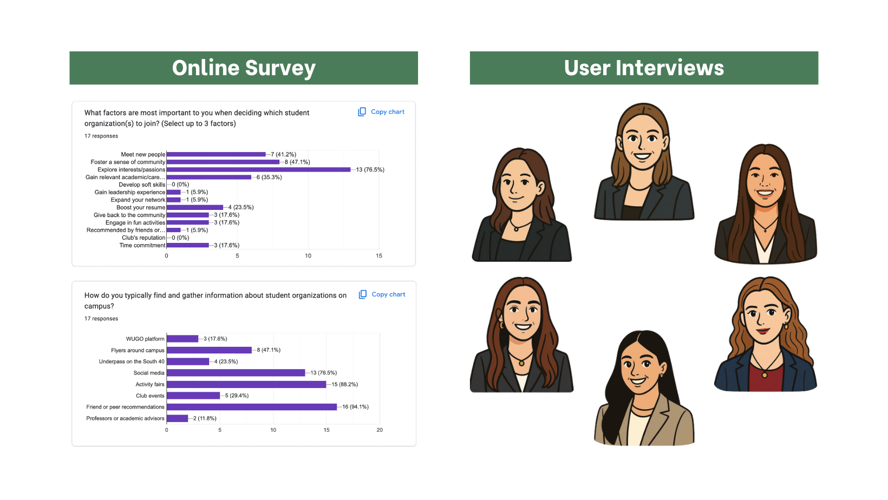

Problem
Students and club leaders struggle to connect.
WashU has hundreds of student organizations, but information is scattered across WUGO, social media, group chats, campus flyers, and word of mouth. Students often have to piece together basic details like recruitment process, time commitment, and types of events before deciding whether a club is the right fit. On the other side, club leaders manage recruiting and onboarding across multiple channels, making it harder to consistently share information and connect with prospective members.
Research
Understanding how students and club leaders navigate the experience.
I conducted a survey and interviewed 3 students and 3 club leaders to understand how they discover, evaluate, recruit, and onboard. I then used affinity mapping, personas, and journey maps to organize what I learned and identify pain points and opportunities.



Research revealed opportunities across both students and club leaders. Given the project scope, I focused the design on four student needs that came up most consistently.
- One Central Hub: Bring club info, announcements, and leadership contacts into one reliable place.
- Smarter Discovery: Help students find relevant clubs through filters + personalized recommendations.
- No More Guesswork: Easily find key details like time commitment, event schedules, and expectations.
- Student Dashboard: Give students one place to manage their profile, interests, and current clubs.
Prototype
Designing around three moments: discover, evaluate, and manage.
I built a mid-fidelity prototype focused on the biggest points of friction uncovered in my research.
Make discovery more personal.
A “Recommended for You” section uses student interests to make personalized suggestions. Additionally, filters for category, school, and commitment help students find relevant clubs without feeling overwhelmed.
Give students the info they need.
Standardized club profiles bring key details like the club’s mission, upcoming events, time commitment, expectations, photos, and leadership contacts into one place.
Give students a home base.
A personal dashboard lets students manage their profile, customize their interests for better recommendations, and keep track of their current club memberships.
Testing
Testing showed where the experience still needed refinement.
I ran usability tests with student participants to see how easily users could complete tasks in the prototype. The results helped identify both areas that worked well and points of friction to address.
Task 1: Adding an interest
Users completed the task pretty smoothly, with minor confusion around category headers.
Task 2: Applying a filter
Users struggled to see/find the filters and often clicked the search bar at the top instead.
Task 3: Finding how to join
Users found key club information easily, though contrast and readability could be improved.
Next Steps
Refining the experience based on what I learned.
Reflection
Letting research shape the product.
This project taught me how to turn a broad problem into focused product decisions. Research helped me understand where students and club leaders struggled, while testing showed where the solution needed refinement. I learned to let user needs guide the product instead of designing based on assumptions.